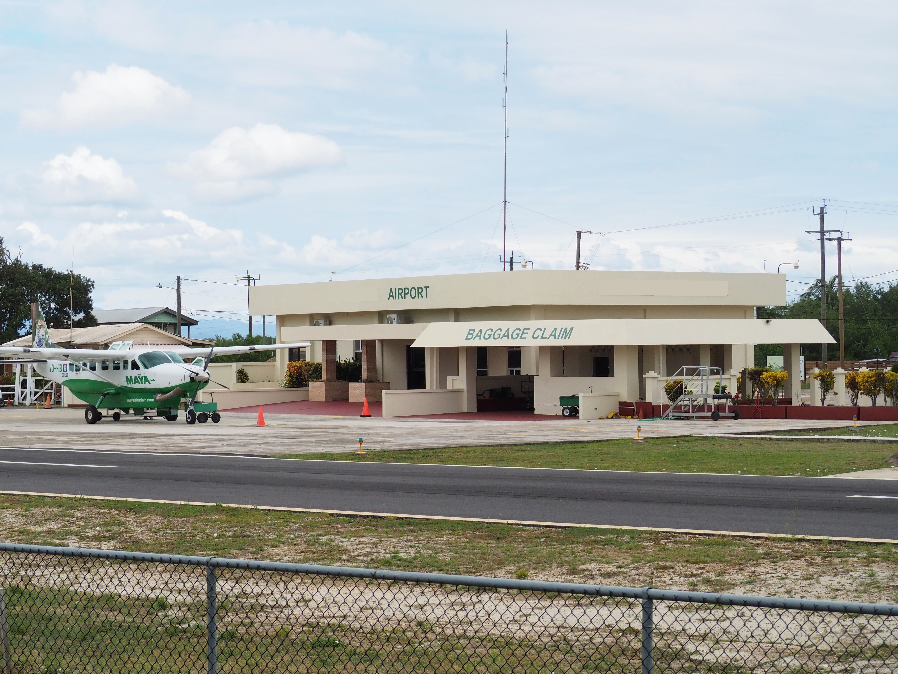
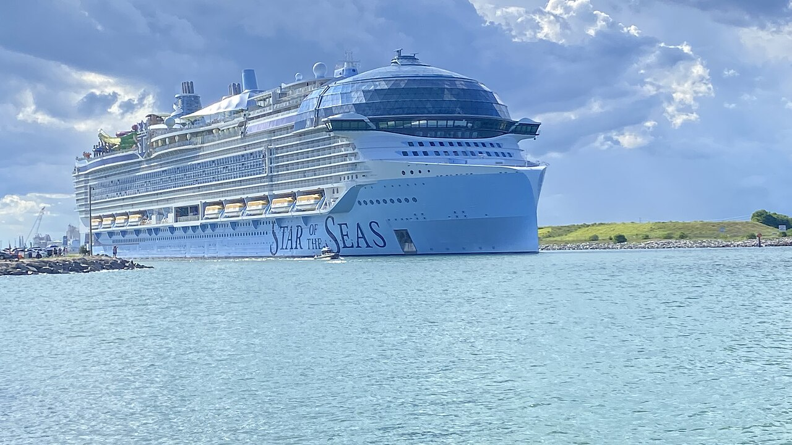

Almost all visitors arrive in Taniti by air, though some arrive on a small
cruise ship that docks in Yellow Leaf Bay for one night per week. Taniti is
served by a small airport that can accommodate small jets and propeller
planes. Taniti is in the process of expanding the airport so larger jets will
be able to land on the island within the next few years.

Taniti Airport

Harbor Arrival
Ground Transportation
Public buses serve Taniti City and run from 5 a.m. to 11 p.m. every day.
Private buses serve the rest of the island.
Taxis are available in Taniti City.
Rental cars can be rented from a local rental agency near the airport.
Bikes and helmets are available to rent from several vendors (helmets are
required by law).
Taniti City is flat and very walkable. Many tourists stay in the area
surrounding Merriton Landing; this area is easy to explore on foot.